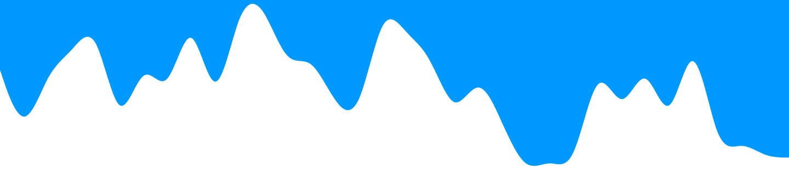

Home
Über mich
Kontakt
Portfolio von Jannik
Hey, ich bin Jannik 14 Jahre alt und hab Interesse am Programmieren. Ebenso interessiere ich mich am Fliegen.
Aktuell versuche ich Websiten coden zu Lernen
Projekte:
- HeroSMP der Minecraft Server Deutschlands!
- Forum Webseite(Geplant in der Zukunft)
- Webseite für den HeroSMP Server